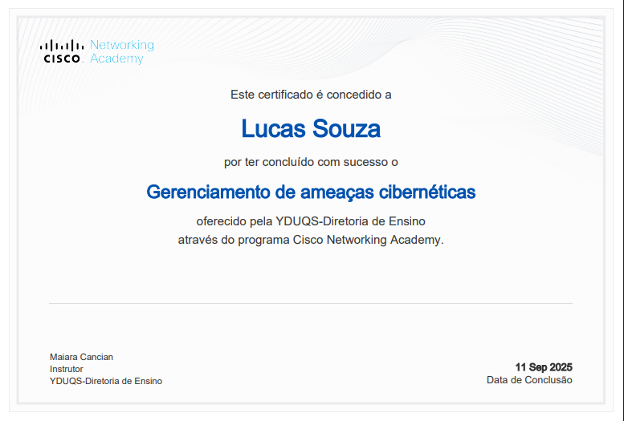
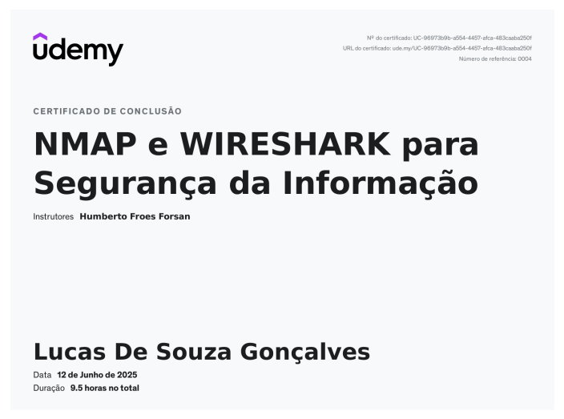
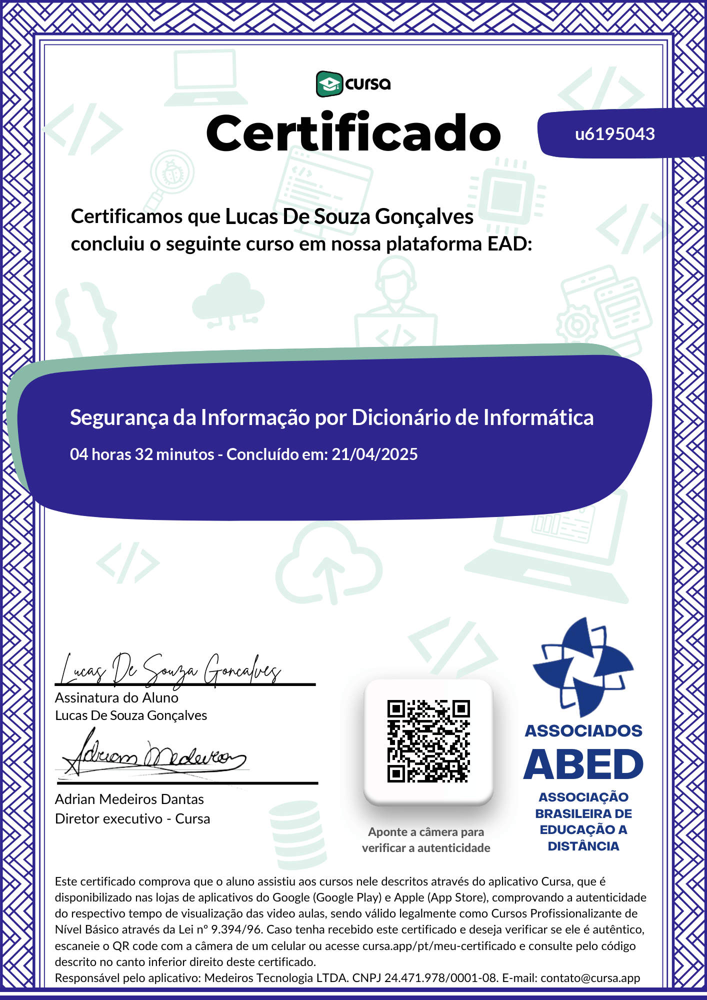
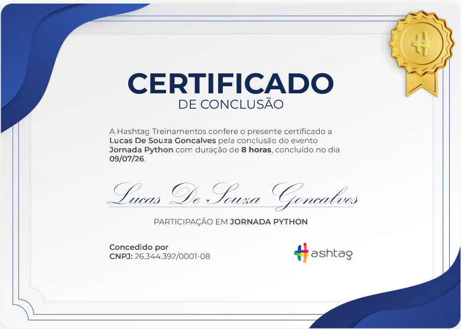

🛡️ Segurança
- Análise de vulnerabilidades
- Hardening básico
- Conceitos de SOC / Blue Team
🖥️ Laboratórios
- Utilização do Kali Linux para testes de intrusão e análise de vulnerabilidades
- Análise de malware (theZoo)
- Wireshark / Tráfego de rede
⚙️ Automação
- Scripts em Bash / Python
- Organização de rotinas
- Coleta de informações
🌐 Infra
- Redes (TCP/IP, DNS, HTTP)
- Linux (Bash, comandos avançados)
- Conceitos de Nuvem
Formação Acadêmica
- Defesa Cibernética - Estácio (Previsão: Julho 2027)
Certificações

Gerenciamento de Ameaças Cibernéticas

NMAP e WIRESHARK

Segurança da informação

Python
Resumo Profissional
Estudante de Defesa Cibernética.
Experiência prática em laboratórios com Kali Linux, análise de vulnerabilidades, análise básica de malware e monitoramento de tráfego de rede com Wireshark.
Conhecimentos em Redes TCP/IP, Sistema Operacional Windowns, Linux e automação com Bash e Python. Em busca de oportunidades como estagiário ou júnior em segurança cibernética.